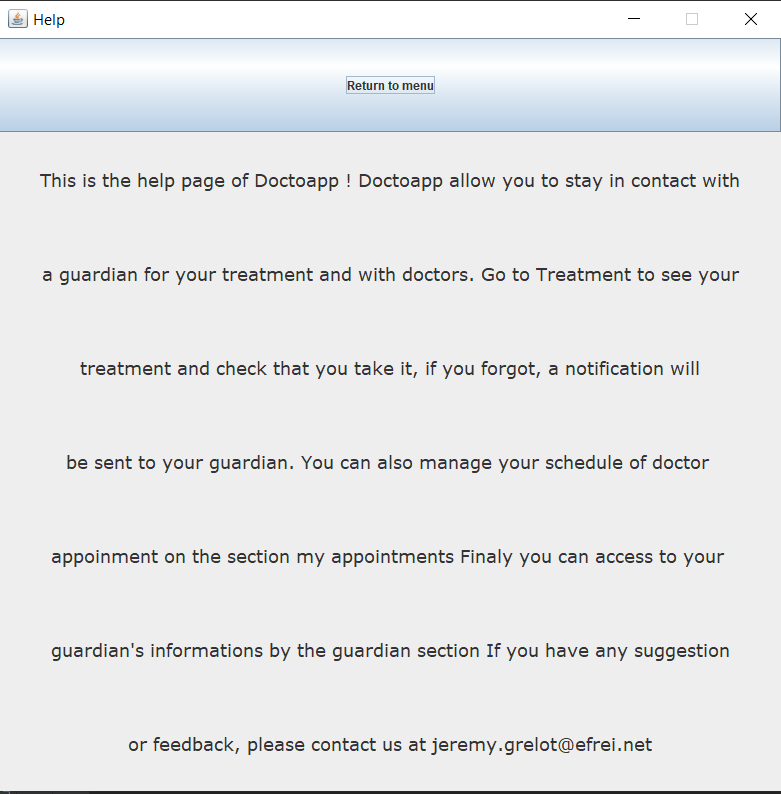

<!DOCTYPE html>
<html lang="en"></html>
<html>
<head>
    <link rel="stylesheet" type="text/css" href="style_DoctoApp.css">
	<meta charset="utf-8">
    <title>DoctoApp</title>
</head>

<body>
    

    <div id="first_block">
        <h1>Purpose of our project</h1>
        <p>
            This app aims to help the elderly people managing their health.
            For that we will provide them an interactive list of their medication
            with timed notifications to avoid a poor medical treatment. The app will
            also allow them to see and manage their doctors appointement and lastly a
            tutor/guardian system will be implemented in the app. Therefore a person 
            responsible of the elderly user would be alerted by an email in case of a 
            forgotten dosing time.
        </p>

        <br><br>
        <h2>Let's wrap up the different functionalities of our program :</h2>
        <h3>Mandatory requirements : </h3>
        <ul>
            <li>Being able to confirm that we took our medication</li>
            <li>Consulting our treatment list</li>
            <li>Being alerted by a notification at the right dosing time</li>
            <li>Producing a report of the treatment history for the caregiver</li>
        </ul>
        
        <h3>Additional requirements : </h3>
        <ul>
            <li>Login and register</li>
            <li>Adding treaments to our treatment list</li>
            <li>Choosing a tutor by giving his email adress</li>
            <li>Alerting the tutor/guardian in a short time if we didn't take our medication</li>
            <li>Making a list of our future doctor appointments and seing the next one in the home page</li>
        </ul>

        <br><br>
        <p>
            We will now talk a little bit about the different existing apps and website that we saw during our researchs.
            And then we will tackle the main challenges that we will have to face during the implementation of our app and hwo we plan to overcome them.

            First let's talk about the app Medicine time!
            It had a functionality of notification for treaments just like what we are gonna implement.
            And their design of notification was similar to what we had in mind.
            And the idea to add the frequency of the treaments and the remaining days is a good idea.
        </p>
        
        <br>
        
        

        <br><br>
        <p>
            ZocDoc is an application that allow you to take medical appointments online. This application will simplifate all your schedules with a friendly user design.
        </p>
        
        <br>
        

        <br><br>
        <p>
            Heal is an application where you can contact doctor from your house and take an appointement if needed. It is very famous in the USA.
        </p>
        
        <br>
        
        

        <br><br>
        <p>
            Finaly, there is the french equivalent of Heal called Doctolib. Basiclly the same functionalities, Doctolib allow the user to take appointement with 
            all doctors register on the app.
        </p>
        <br>
        

        

        <h2>Challeges & how to do it</h2>
        <p>
            One of the main challenges will be to manage the schedule of the customer. The schedule have to be easy to change for the user and we have to connect
            it to the guardian. So we have to create a simple and clear database with good interactions.
            <br>
            We choose to create this project in java, because we will need to use the object oriented method. As all the members of the group learned java in class
            this is a good choice.
        </p>
    </div>
    

    <div id="second_block">
        <h1>Mind Maps and UML diagrams</h1>
        
        <p>Here's our mindmap. We created it in first to have an overview of the project. 
            With that we can know what we have to do, how we will do it and of course all the deadlines we have.
            We also can see that we defined our requierments and the audiance for the app.
        </p>

    </div>

    <div id="third_block">
        <h1>Overall documentation of the app</h1>
        

    </div>

    <div id="fourth_block">
        <h1>Diagrams</h1>
        <h2>Use case diagram</h2>
        
        <p>This is our use case diagram, you can see 3 actors : patient, admin & Guardian
            With Doctoapp, Patient can Login, Register, have a list of treatments or appointements, taking treatment, consult guardian or being notified for its treeatment.
            Guardian can Login, Register, Consult and modify its informations, Take an appointment, Set a treatment or being notified if the patient didn't take its treatment.
            Finaly the admin can access to the list of appointment, list of treatment and the guardian information.
        </p>

        <h2>Activity diagram</h2>
        
        <p>This is the Activity diagram, we can see the actions proccesed by each class.
            The user app do the login/register, show and process the menu and displays the notifications.
            The treatment part manage all backend stuff, checking, adding or updating in database.
        </p>

        <h2>CRC cards</h2>
        
        <p>This is the CRC diagram. We can see all the classes we need and all dependecies.
            We can see that the center of our programm is the GUI class. It's normal, it's our menu.
        </p>

        <h2>Sequence diagram</h2>
        
        <p>This is our sequence diagram, we can see that the Backend server and the BD are a lot used.
            Basicly, the app ask for some data and the server sent the data back.
        </p>

        <h2>UML class diagram</h2>
        
        <p>Here is ou UML Class diagram. We can clearly see the dependencies between classes.
            As we said GUI, the menu is the center, we can also see how the Form are part of the severals windows and how windows are parts of the menu.
        </p>

        <h2>State machine diagram(s)</h2>
        
        <p>Here the State machine diagram, we can see how pages interact. On each transition, there are our functions and conditions.
            We can se the path the user can take throught the site.
        </p>

        <h2>First use case scenario</h2>
        
        <p>In this use case scenario, we show the steps for the register case.
        </p>

        <h2>Second use case scenario</h2>
        
        <p>In this use case scenario, we present the steps when a user wants to access to his treatment. He can both create or see his appointments.
        </p>


        <h2>Package diagram(s)</h2>
        
        <p>Here is the package diagram, we can see dependencies between classes. We can see the notification class is import in a lot of classes of PatientApp.
        </p>

        <h2>Object diagram of the use case being alerted by a notification when you have to take medicine</h2>
        
        <p>This diagram shows the values of the 3 classes implicated in the treatment notification process.
            First, you have to be logged in to your account. Then being in the menu and at the time of one of your treatments
            Then click on the pop up and finally interact with the notification page. Here the user confirmed that he took his medication as 
            treatment_taken = true.
        </p>


    </div>


    <div id="fifth_block">
        <h1>Screenshots of the application</h1>

        <h2>Login page</h2>
        
        <p>To log in the website, you have to entrer a valid email and the corresponding password.</p>

        <h2>Register page</h2>
        
        <p>Same as the Login page but you have to an email that doesn't exit in the database.</p>

        <h2>Tutor App</h2>
        
        <p>If you click the checkbox then that means you want to access the tutor/guardian interface. There you can get
            a report in a txt file of all you pupil's treatments and also see in the table all the treatments you pupil hasn't confirmed 
            taking them.
        </p>

        <h2>Menu</h2>
        
        <p>Here is our menu, on the top, you can see your next medical appointment.
            Next, you have four buttons to go on the page that you want.
        </p>

        <h2>Notification pop up</h2>
        
        <p>This is a pop up to remind the user to take the treatment.</p>

        <h2>Notification page</h2>
        
        <p>One this notification, you can comfirm that you took your treatment.
            Of course, the edication you need and the dosage is write at the top.
        </p>

        <h2>Treament page</h2>
        
        <p>Here is the schedule of the user's treatments. it is a basic 2D array with data inside.
            The user can back to the menu or add a new treatment.
        </p>

        <h2>Page to add treaments</h2>
        
        <p>On this page, the user can add a new treatment by fill the form with the treatment name, the dosage, the remaining days and the hour.</p>

        <h2>Appointment page</h2>
        
        <p>Here is the schedule of the user's appointment. It is a basic 2D array with data inside.
            The user can back to the menu or add a new appointment.</p>

        <h2>Page to add appointements</h2>
        
        <p>On this page, the user can add a new appointment by fill the form with the doctor name, the adress and the date.</p>

        <h2>Guardian page</h2>
        
        <p>Here is the guardian page where user can see the guardian's information. He can also change the informations.</p>

        <h2>Page to modify guardian info</h2>
        
        <p>Here the user can change its tutor by entering a new name and a new email.</p>

        <h2>Help page</h2>
        
        <p>Finaly, this is the help page created to explain the basic functionalitiesof the app to the user.</p>
        

    </div>

    <div>
        <a href="https://github.com/jeremyGrelaud/DoctoApp.git">link to our github</a>
    </div>


</body>


</html>